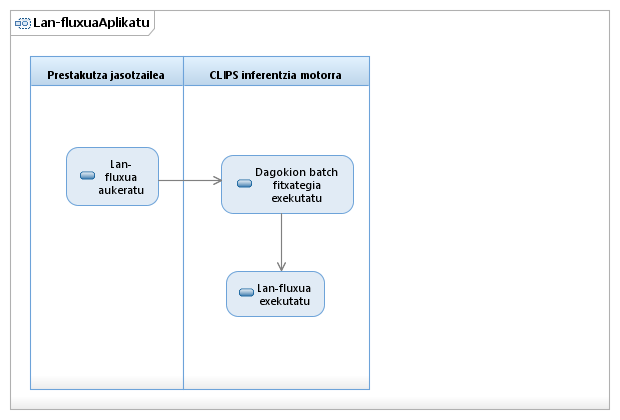

Visión general
Principio
Paquete
Elemento
Documentación UML de Lan-fluxuen kudeaketa eta trebakuntza
Erabilpen-kasuen eredua::Lan-fluxuen kudeaketa eta trebakuntza::Lan-fluxuaAplikatu::Lan-fluxuaAplikatu::Lan-fluxuaAplikatu Activity Diagram
Diagrama Lan-fluxuaAplikatu Activity Diagram

Propiedades:
Ver
Nombre
Lan-fluxuaAplikatu Activity Diagram
Tipo
Activity Diagrama
Visión general
Principio
Paquete
Elemento
Documentación UML de Lan-fluxuen kudeaketa eta trebakuntza